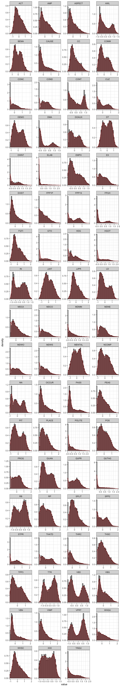

#renv::restore() # Restore the project's dependencies from the lockfile to ensure that same package versions are used as in the original thesis.
library(broom.mixed) # For checking singularity issues
library(car) # For recoding data
library(corrplot) # For the feature correlation matrix
library(cowplot) # For nice plots
library(emmeans) # Comparing group means of predicted values
library(GGally) # For ggpairs
library(gridExtra) # For making large faceted plots
library(here) # For ease of sharing
library(knitr) # Loaded to display the tables using the kable() function
library(lme4) # For mixed effects modelling
library(psych) # For various useful stats function, including KMO()
library(scales) # For working with colours
library(sjPlot) # For nice tabular display of regression models
library(tidyverse) # For data wrangling and plotting
library(visreg) # For nice visualisations of model results
select <- dplyr::select
filter <- dplyr::filter
source(here("R_rainclouds.R")) # For geom_flat_violin rainplotsAppendix F: Data Preparation for the Model of Textbook English vs. ‘real-world’ English
This script documents the steps taken to pre-process the data extracted from the Textbook English Corpus (TEC) and the three reference corpora that were ultimately entered in the comparative multi-dimensional model of Textbook English as compared to English outside the EFL classroom (Chapter 7).
Packages required
The following packages must be installed and loaded to process the data.
# Colours used in Register Studies paper and included in Open Access plots published on Zenodo:
#colours <- suf_palette(name = "london", n = 6, type = "continuous") # Very nice, similar to OrRd palette
#scales::show_col(colours)
#colours <- colours[6:1]
# Colour scheme used in PhD thesis:
colours = c("#F9B921", "#A18A33", "#722672", "#BD241E", "#15274D", "#D54E1E")
# scales::show_col(colours)Data import from MFTE outputs
The raw data used in this script comes from the matrices of mixed normalised frequencies as output by the MFTE Perl v. 3.1 (Le Foll 2021a).
Spoken BNC2014
These normalised frequencies were computed on the basis of my own “John and Jill in Ivybridge” version of the Spoken BNC2014 with added full stops at speaker turns (see Appendix B for details).
Code
SpokenBNC2014 <- read.delim(here("data", "MFTE", "SpokenBNC2014_3.1_normed_complex_counts.tsv"), header = TRUE, stringsAsFactors = TRUE)
SpokenBNC2014$Series <- "Spoken BNC2014"
SpokenBNC2014$Level <- "Ref."
SpokenBNC2014$Country <- "Spoken BNC2014"
SpokenBNC2014$Register <- "Spoken BNC2014"Youth Fiction corpus
These normalised frequencies were computed on the basis of the random samples of approximately 5,000 words of the books of the Youth Fiction corpus (for details of the works included in this corpus, see Appendix B).
Code
YouthFiction <- read.delim(here("data", "MFTE", "YF_sampled_500_3.1_normed_complex_counts.tsv"), header = TRUE, stringsAsFactors = TRUE)
YouthFiction$Series <- "Youth Fiction"
YouthFiction$Level <- "Ref."
YouthFiction$Country <- "Youth Fiction"
YouthFiction$Register <- "Youth Fiction"Informative Texts for Teens (InfoTeens) corpus
Code
InfoTeen <- read.delim(here("data", "MFTE", "InfoTeen_3.1_normed_complex_counts.tsv"), header = TRUE, stringsAsFactors = TRUE)
# Removes three outlier files which should not have been included in the corpus as they contain exam papers only
InfoTeen <- InfoTeen |>
filter(Filename!=".DS_Store" & Filename!="Revision_World_GCSE_10529068_wjec-level-law-past-papers.txt" & Filename!="Revision_World_GCSE_10528474_wjec-level-history-past-papers.txt" & Filename!="Revision_World_GCSE_10528472_edexcel-level-history-past-papers.txt")
InfoTeen$Series <- "Info Teens"
InfoTeen$Level <- "Ref."
InfoTeen$Country <- "Info Teens"
InfoTeen$Register <- "Info Teens"Details of the composition of the Info Teens corpus can be found in Section 4.3.2.5 of the book. The version used in the present study comprises 1,411 texts.
Merging TEC and reference corpora data
[1] "Conversation" "Fiction" "Info Teens" "Informative"
[5] "Spoken BNC2014" "Youth Fiction" Corpus size
These tables provide some summary statistics about the texts/files whose normalised feature frequencies were entered in the model of Textbook English vs. real-life English.
Code
| (Sub)corpus | # texts |
|---|---|
| Textbook Conversation | 593 |
| Textbook Fiction | 285 |
| Info Teens Ref. | 1,411 |
| Textbook Informative | 364 |
| Spoken BNC2014 Ref. | 1,251 |
| Youth Fiction Ref. | 1,191 |
Code
| Register | totaltexts | totalwords | mean | sd | TTRmean |
|---|---|---|---|---|---|
| Conversation | 1,844 | 13,804,196 | 7,486 | 8,690 | 0.40 |
| Fiction | 1,476 | 7,321,747 | 4,960 | 2,022 | 0.49 |
| Informative | 1,775 | 1,436,732 | 809 | 188 | 0.51 |
Data preparation for PCA
Feature distributions
The distributions of each linguistic features were examined by means of visualisation. As shown below, before transformation, many of the features displayed highly skewed distributions.
Code
#ncounts <- readRDS(here("data", "processed", "counts3Reg.rds"))
ncounts |>
select(-Words) |>
keep(is.numeric) |>
gather() |> # This function from tidyr converts a selection of variables into two variables: a key and a value. The key contains the names of the original variable and the value the data. This means we can then use the facet_wrap function from ggplot2
ggplot(aes(value, after_stat(density))) +
theme_bw() +
facet_wrap(~ key, scales = "free", ncol = 4) +
scale_x_continuous(expand=c(0,0)) +
scale_y_continuous(limits = c(0,NA)) +
geom_histogram(bins = 30, colour= "black", fill = "grey") +
geom_density(colour = "darkred", weight = 2, fill="darkred", alpha = .4)
Code
#ggsave(here("plots", "DensityPlotsAllVariables.svg"), width = 15, height = 49)Feature removal
A number of features were removed from the dataset as they are not linguistically interpretable. In the case of the TEC, this included the variable CD because numbers spelt out as digits were removed from the textbooks before these were tagged with the MFTE. In addition, the variables LIKE and SO because these are “bin” features included in the output of the MFTE to ensure that the counts for these polysemous words do not inflate other categories due to mistags (Le Foll 2021b).
Whenever linguistically meaningful, very low-frequency features, features with low MSA or communalities (see chunks below) were merged. Finally, features absent from more than third of texts were also excluded. For the comparative analysis of TEC and the reference corpora, the following linguistic features were excluded from the analysis due to low dispersion:
# Removal of meaningless feature: CD because numbers as digits were mostly removed from the textbooks, LIKE and SO because they are dustbin categories
ncounts <- ncounts |>
select(-c(CD, LIKE, SO))
# Combine problematic features into meaningful groups whenever this makes linguistic sense
ncounts <- ncounts |>
mutate(JJPR = JJPR + ABLE, ABLE = NULL) |>
mutate(PASS = PGET + PASS, PGET = NULL) |>
mutate(TPP3 = TPP3S + TPP3P, TPP3P = NULL, TPP3S = NULL) |> # Merged due to TTP3P having an individual MSA < 0.5
mutate(FQTI = FREQ + TIME, FREQ = NULL, TIME = NULL) # Merged due to TIME communality < 0.2 (see below)
# Function to compute percentage of texts with occurrences meeting a condition
compute_percentage <- function(data, condition, threshold) {
numeric_data <- Filter(is.numeric, data)
percentage <- round(colSums(condition[, sapply(numeric_data, is.numeric)])/nrow(data) * 100, 2)
percentage <- as.data.frame(percentage)
colnames(percentage) <- "Percentage"
percentage <- percentage |>
filter(!is.na(Percentage)) |>
rownames_to_column() |>
arrange(Percentage)
if (!missing(threshold)) {
percentage <- percentage |>
filter(Percentage > threshold)
}
return(percentage)
}
# Calculate percentage of texts with 0 occurrences of each feature
zero_features <- compute_percentage(ncounts, ncounts == 0, 66.6)
zero_features |>
kable(col.names = c("Feature", "% texts with zero occurrences"))| Feature | % texts with zero occurrences |
|---|---|
| PRP | 85.34 |
| URL | 93.03 |
| EMO | 98.98 |
| HST | 99.55 |
These feature removal operations resulted in a feature set of 71 linguistic variables.
Identifying potential outlier texts
All normalised frequencies were normalised to identify any potential outlier texts.
# First scale the normalised counts (z-standardisation) to be able to compare the various features
zcounts <- ncounts2 |>
select(-Words) |>
keep(is.numeric) |>
scale()
# If necessary, remove any outliers at this stage.
data <- cbind(ncounts2[,1:8], as.data.frame(zcounts))
outliers <- data |>
filter(if_any(where(is.numeric) & !Words, .fns = function(x){x > 8})) |>
select(Filename, Corpus, Series, Register, Level, Words)The following outlier texts were identified according to the above conditions and excluded in subsequent analyses.
Code
# These are potential outlier texts :
outliers Filename
1 POC_4e_Spoken_0007.txt
2 Solutions_Elementary_ELF_Spoken_0013.txt
3 EIM_Starter_Informative_0004.txt
4 GreenLine_1_Spoken_0003.txt
5 Access_1_Spoken_0011.txt
6 Achievers_B1_Informative_0003.txt
7 EIM_Starter_Spoken_0002.txt
8 GreenLine_1_Spoken_0008.txt
9 JTT_3_Informative_0003.txt
10 GreenLine_1_Spoken_0010.txt
11 EIM_1_Spoken_0012.txt
12 NGL_1_Spoken_0013.txt
13 NGL_3_Spoken_0018.txt
14 Solutions_Intermediate_Spoken_0029.txt
15 NGL_1_Spoken_0012.txt
16 GreenLine_1_Spoken_0006.txt
17 GreenLine_2_Spoken_0004.txt
18 Access_2_Spoken_0023.txt
19 HT_4_Informative_0006.txt
20 Solutions_Intermediate_Informative_0017.txt
21 EIM_1_Spoken_0013.txt
22 Solutions_Elementary_ELF_Spoken_0021.txt
23 Solutions_Intermediate_Plus_Spoken_0022.txt
24 Access_2_Spoken_0028.txt
25 NGL_1_Spoken_0005.txt
26 Solutions_Elementary_ELF_Spoken_0016.txt
27 Solutions_Pre-Intermediate_ELF_Spoken_0007.txt
28 Solutions_Intermediate_Informative_0013.txt
29 GreenLine_2_Spoken_0003.txt
30 HT_4_Spoken_0010.txt
31 Solutions_Elementary_Informative_0003.txt
32 Access_2_Informative_0001.txt
33 Solutions_Elementary_Informative_0010.txt
34 GreenLine_1_Informative_0001.txt
35 Access_2_Spoken_0002.txt
36 Solutions_Intermediate_Spoken_0019.txt
37 Access_3_Informative_0003.txt
38 Access_1_Spoken_0019.txt
39 Access_2_Spoken_0013.txt
40 Solutions_Intermediate_Plus_Informative_0014.txt
41 Revision_World_GCSE_10525362_literary-terms.txt
42 Revision_World_GCSE_10528697_p6-physics-radioactive-materials.txt
43 Science_Tech_Kinds_NZ_10382383_math.txt
44 Science_for_students_10064820_scientists-say-metabolism.txt
45 Science_Tech_Kinds_NZ_10382388_recycling.txt
46 History_Kids_BBC_10404337_go_furthers.txt
47 Science_Tech_Kinds_NZ_10382391_sports.txt
48 Teen_Kids_News_10402607_so-you-want-to-be-an-archivist.txt
49 Science_Tech_Kinds_NZ_10382234_biology.txt
50 Science_Tech_Kinds_NZ_10382372_astronomy.txt
51 Dogo_News_file10060404_banana-plant-extract-may-be-the-key-to-slower-melting-ice-cream.txt
52 Science_Tech_Kinds_NZ_10382667_countries.txt
53 Quatr_us_file10390777_quick-summary-geological-erashtm.txt
54 Science_Tech_Kinds_NZ_10382873_physics.txt
55 Science_Tech_Kinds_NZ_10382382_light.txt
56 Factmonster_10053687_august-13.txt
57 Revision_World_GCSE_10526703_limited-companies.txt
58 Revision_World_GCSE_10529637_transition-metals.txt
59 Quatr_us_10390856_early-african-historyhtm.txt
60 History_Kids_BBC_10401873_ff6_sicilylandingss.txt
61 Quatr_us_10394250_harappan.txt
62 Ducksters_10398301_iraqphp.txt
63 History_Kids_BBC_10403171_death_sakkara_gallery_04s.txt
64 Revision_World_GCSE_10528246_agricultural-change.txt
65 Revision_World_GCSE_10528086_uk-government-judiciary.txt
66 Revision_World_GCSE_10529794_definitions.txt
67 Encyclopedia_Kinds_au_10085347_Nobel_Prize_in_Chemistry.txt
68 Science_for_students_10064875_questions-big-melt-earths-ice-sheets-are-under-attack.txt
69 Teen_Kids_News_10403301_golden-globe-winners-2019-the-complete-list.txt
70 Science_Tech_Kinds_NZ_10382201_projects.txt
71 Revision_World_GCSE_10529753_probability.txt
72 Encyclopedia_Kinds_au_10085531_Complex_analysis.txt
73 History_Kids_BBC_10401890_ff7_ddays.txt
74 History_Kids_BBC_10403434s.txt
75 History_Kids_BBC_10401872_ff6_italys.txt
76 Science_Tech_Kinds_NZ_10382371_amazing.txt
77 Quatr_us_10391129_athabascan.txt
78 Encyclopedia_Kinds_au_10085355_20th_century.txt
79 Dogo_News_10060755_luxury-space-hotel-promises-guests-a-truly-out-of-this-world-vacation.txt
80 Revision_World_GCSE_10528072_nationalism-practice.txt
81 Quatr_us_10390861_quatr-us-privacy-policyhtm.txt
82 History_Kids_BBC_10401909_ff7_bulges.txt
83 History_kids_10381259_timeline-of-mesopotamia.txt
84 Revision_World_GCSE_10528123_gender-written-textual-analysis-framework.txt
85 Science_Tech_Kinds_NZ_10386406_floods.txt
86 Revision_World_GCSE_10529693_advantages.txt
87 Science_Tech_Kinds_NZ_10382378_geography.txt
88 Science_Tech_Kinds_NZ_10382374_earth.txt
89 Science_for_students_10066286_watering-plants-wastewater-can-spread-germs.txt
90 Science_Tech_Kinds_NZ_10382393_water.txt
91 World_Dteen_10406069_website_policies.txt
92 Science_Tech_Kinds_NZ_10382384_metals.txt
93 Dogo_News_10062028_puppy-bowl-14-promises-viewers-a-paw-some-time-on-super-bowl-sunday.txt
94 History_Kids_BBC_10404730_go_furthers.txt
95 Science_Tech_Kinds_NZ_10382385_nature.txt
96 Science_for_students_10065015_scientists-say-dna-sequencing.txt
97 Quatr_us_file10390817_conifers-pine-trees-gymnospermshtm.txt
98 TweenTribute_10051509_it-true-elephants-cant-jump.txt
99 Revision_World_GCSE_10528494_application-software.txt
100 Revision_World_GCSE_10529581_different-types-questions-examinations.txt
101 Dogo_News_10061669_the-chinese-city-of-chengdu-may-soon-be-home-to-multiple-moons.txt
102 Ducksters_10398306_geography_of_ancient_chinaphp.txt
103 Science_for_students_10065144_scientists-say-multiverse.txt
104 Science_Tech_Kinds_NZ_10382211_images.txt
105 Factmonster_10053754_may-18.txt
106 World_Dteen_10406047_AboutWORLDteen.txt
107 Ducksters_10398078_first_new_dealphp.txt
108 Revision_World_GCSE_10526926_economies-scale.txt
109 Factmonster_10053201_september-03.txt
110 Science_Tech_Kinds_NZ_10387183_calciumcarbonates.txt
111 Science_Tech_Kinds_NZ_10382380_health.txt
112 Revision_World_GCSE_10529587_sources-finance.txt
113 Quatr_us_10393444_fishing.txt
114 Ducksters_10398315_glossary_and_termsphp.txt
115 S5AA.txt
Corpus Series Register Level Words
1 Textbook.English POC Conversation C 750
2 Textbook.English Solutions Conversation A 931
3 Textbook.English EIM Informative A 534
4 Textbook.English GreenLine Conversation A 970
5 Textbook.English Access Conversation A 784
6 Textbook.English Achievers Informative C 926
7 Textbook.English EIM Conversation A 824
8 Textbook.English GreenLine Conversation A 876
9 Textbook.English JTT Informative D 699
10 Textbook.English GreenLine Conversation A 701
11 Textbook.English EIM Conversation B 640
12 Textbook.English NGL Conversation A 940
13 Textbook.English NGL Conversation C 751
14 Textbook.English Solutions Conversation C 672
15 Textbook.English NGL Conversation A 910
16 Textbook.English GreenLine Conversation A 622
17 Textbook.English GreenLine Conversation B 1102
18 Textbook.English Access Conversation B 875
19 Textbook.English HT Informative C 513
20 Textbook.English Solutions Informative C 816
21 Textbook.English EIM Conversation B 967
22 Textbook.English Solutions Conversation A 846
23 Textbook.English Solutions Conversation D 596
24 Textbook.English Access Conversation B 813
25 Textbook.English NGL Conversation A 1020
26 Textbook.English Solutions Conversation A 871
27 Textbook.English Solutions Conversation B 630
28 Textbook.English Solutions Informative C 770
29 Textbook.English GreenLine Conversation B 850
30 Textbook.English HT Conversation C 727
31 Textbook.English Solutions Informative A 1051
32 Textbook.English Access Informative B 655
33 Textbook.English Solutions Informative A 708
34 Textbook.English GreenLine Informative A 731
35 Textbook.English Access Conversation B 572
36 Textbook.English Solutions Conversation C 1024
37 Textbook.English Access Informative C 1000
38 Textbook.English Access Conversation A 701
39 Textbook.English Access Conversation B 981
40 Textbook.English Solutions Informative D 537
41 Informative.Teens Info Teens Informative Ref. 790
42 Informative.Teens Info Teens Informative Ref. 1015
43 Informative.Teens Info Teens Informative Ref. 522
44 Informative.Teens Info Teens Informative Ref. 895
45 Informative.Teens Info Teens Informative Ref. 666
46 Informative.Teens Info Teens Informative Ref. 620
47 Informative.Teens Info Teens Informative Ref. 657
48 Informative.Teens Info Teens Informative Ref. 763
49 Informative.Teens Info Teens Informative Ref. 843
50 Informative.Teens Info Teens Informative Ref. 900
51 Informative.Teens Info Teens Informative Ref. 611
52 Informative.Teens Info Teens Informative Ref. 717
53 Informative.Teens Info Teens Informative Ref. 643
54 Informative.Teens Info Teens Informative Ref. 722
55 Informative.Teens Info Teens Informative Ref. 639
56 Informative.Teens Info Teens Informative Ref. 523
57 Informative.Teens Info Teens Informative Ref. 714
58 Informative.Teens Info Teens Informative Ref. 787
59 Informative.Teens Info Teens Informative Ref. 1136
60 Informative.Teens Info Teens Informative Ref. 813
61 Informative.Teens Info Teens Informative Ref. 651
62 Informative.Teens Info Teens Informative Ref. 657
63 Informative.Teens Info Teens Informative Ref. 844
64 Informative.Teens Info Teens Informative Ref. 789
65 Informative.Teens Info Teens Informative Ref. 1019
66 Informative.Teens Info Teens Informative Ref. 904
67 Informative.Teens Info Teens Informative Ref. 598
68 Informative.Teens Info Teens Informative Ref. 685
69 Informative.Teens Info Teens Informative Ref. 800
70 Informative.Teens Info Teens Informative Ref. 947
71 Informative.Teens Info Teens Informative Ref. 816
72 Informative.Teens Info Teens Informative Ref. 735
73 Informative.Teens Info Teens Informative Ref. 759
74 Informative.Teens Info Teens Informative Ref. 732
75 Informative.Teens Info Teens Informative Ref. 786
76 Informative.Teens Info Teens Informative Ref. 629
77 Informative.Teens Info Teens Informative Ref. 637
78 Informative.Teens Info Teens Informative Ref. 864
79 Informative.Teens Info Teens Informative Ref. 722
80 Informative.Teens Info Teens Informative Ref. 776
81 Informative.Teens Info Teens Informative Ref. 960
82 Informative.Teens Info Teens Informative Ref. 732
83 Informative.Teens Info Teens Informative Ref. 768
84 Informative.Teens Info Teens Informative Ref. 905
85 Informative.Teens Info Teens Informative Ref. 580
86 Informative.Teens Info Teens Informative Ref. 782
87 Informative.Teens Info Teens Informative Ref. 761
88 Informative.Teens Info Teens Informative Ref. 726
89 Informative.Teens Info Teens Informative Ref. 836
90 Informative.Teens Info Teens Informative Ref. 856
91 Informative.Teens Info Teens Informative Ref. 995
92 Informative.Teens Info Teens Informative Ref. 669
93 Informative.Teens Info Teens Informative Ref. 581
94 Informative.Teens Info Teens Informative Ref. 611
95 Informative.Teens Info Teens Informative Ref. 722
96 Informative.Teens Info Teens Informative Ref. 953
97 Informative.Teens Info Teens Informative Ref. 533
98 Informative.Teens Info Teens Informative Ref. 790
99 Informative.Teens Info Teens Informative Ref. 855
100 Informative.Teens Info Teens Informative Ref. 742
101 Informative.Teens Info Teens Informative Ref. 614
102 Informative.Teens Info Teens Informative Ref. 638
103 Informative.Teens Info Teens Informative Ref. 712
104 Informative.Teens Info Teens Informative Ref. 793
105 Informative.Teens Info Teens Informative Ref. 497
106 Informative.Teens Info Teens Informative Ref. 1053
107 Informative.Teens Info Teens Informative Ref. 649
108 Informative.Teens Info Teens Informative Ref. 621
109 Informative.Teens Info Teens Informative Ref. 445
110 Informative.Teens Info Teens Informative Ref. 804
111 Informative.Teens Info Teens Informative Ref. 694
112 Informative.Teens Info Teens Informative Ref. 665
113 Informative.Teens Info Teens Informative Ref. 656
114 Informative.Teens Info Teens Informative Ref. 684
115 Spoken.BNC2014 Spoken BNC2014 Conversation Ref. 1869Code
# Checking that outlier texts are not particularly long or short texts
summary(outliers$Words) Min. 1st Qu. Median Mean 3rd Qu. Max.
445.0 655.5 751.0 773.6 860.0 1869.0 Code
hist(outliers$Words, breaks = 30)
Code
# Distribution of outlier texts across the four corpora
summary(outliers$Corpus) Textbook.English Informative.Teens Spoken.BNC2014 Youth.Fiction
40 74 1 0 Code
# Report on the manual check of a sample of these outliers:
# Encyclopedia_Kinds_au_10085347_Nobel_Prize_in_Chemistry.txt is essentially a list of Nobel prize winners but with some additional information. In other words, not a bad representative of the type of texts of the Info Teen corpus.
# Solutions_Elementary_ELF_Spoken_0013 --> Has a lot of "going to" constructions because they are learnt in this chapter but is otherwise a well-formed text.
# Teen_Kids_News_10403972_a-brief-history-of-white-house-weddings --> No issues
# Teen_Kids_News_10403301_golden-globe-winners-2019-the-complete-list --> Similar to the Nobel prize laureates text.
# Revision_World_GCSE_10528123_gender-written-textual-analysis-framework --> Text includes bullet points tokenised as the letter "o" but otherwise a fairly typical informative text.
# Removing the outliers at the request of the reviewers (but comparisons of models including the outliers showed that the results are very similar):
ncounts3 <- ncounts2 |>
filter(!Filename %in% outliers$Filename)
#saveRDS(ncounts3, here("data", "processed", "ncounts3_3Reg.rds")) # Last saved 6 March 2024This resulted in 4,980 texts/files being included in the comparative model of Textbook English vs. ‘real-life’ English. These standardised feature frequencies were distributed as follows:
Signed log transformation
A signed logarithmic transformation was applied to (further) deskew the feature distributions (Diwersy, Evert, and Neumann 2014; Neumann and Evert 2021).
The signed log transformation function was inspired by the SignedLog function proposed in https://cran.r-project.org/web/packages/DataVisualizations/DataVisualizations.pdf
The new feature distributions are visualised below.
Code
zlogcounts |>
as.data.frame() |>
gather() |> # This function from tidyr converts a selection of variables into two variables: a key and a value. The key contains the names of the original variable and the value the data. This means we can then use the facet_wrap function from ggplot2
ggplot(aes(value, after_stat(density))) +
theme_bw() +
facet_wrap(~ key, scales = "free", ncol = 4) +
scale_x_continuous(expand=c(0,0)) +
scale_y_continuous(limits = c(0,NA)) +
geom_histogram(bins = 30, colour= "black", fill = "grey") +
geom_density(colour = "darkred", weight = 2, fill="darkred", alpha = .4)
Code
#ggsave(here("plots", "DensityPlotsAllVariablesSignedLog.svg"), width = 15, height = 49)Merging of data for MDA
Code
zlogcounts <- readRDS(here("data", "processed", "zlogcounts_3Reg.rds"))
#nrow(zlogcounts)
#colnames(zlogcounts)
ncounts3 <- readRDS(here("data", "processed", "ncounts3_3Reg.rds"))
#nrow(ncounts3)
#colnames(ncounts3)
data <- cbind(ncounts3[,1:8], as.data.frame(zlogcounts))
#saveRDS(data, here("data", "processed", "datazlogcounts_3Reg.rds")) # Last saved 16 March 2024The final dataset comprises of 4,980 texts/files, divided as follows:
Textbook Conversation Textbook Fiction Info Teens Ref.
565 285 1337
Textbook Informative Spoken BNC2014 Ref. Youth Fiction Ref.
352 1250 1191 Testing factorability of data
Visualisation of feature correlations
Code
# Simple heatmap in base R (inspired by Stephanie Evert's SIGIL code)
cor.colours <- c(
hsv(h=2/3, v=1, s=(10:1)/10), # blue = negative correlation
rgb(1,1,1), # white = no correlation
hsv(h=0, v=1, s=(1:10/10))) # red = positive correlation
#png(here("plots", "heatmapzlogcounts.png"), width = 30, height= 30, units = "cm", res = 300)
heatmap(cor(zlogcounts),
symm=TRUE,
zlim=c(-1,1),
col=cor.colours,
margins=c(7,7))
Code
#dev.off()Checking the factorability of data
Collinearity
As a result of the normalisation unit of finite verb phrases for verb-based features, the present tense (VPRT) and past tense (VBD) variables are highly correlated:
cor(data$VPRT, data$VBD)[1] -0.9731048We therefore remove the least marked of the pair of collinear variables: VPRT.
MSA
The overall MSA value of the dataset is 0.95. The features have the following individual MSA values (ordered from lowest to largest):
AMP COMM POS TPP3 JJPR PLACE SPLIT DT JJAT VIMP MDCO
0.67 0.69 0.70 0.74 0.76 0.82 0.83 0.83 0.84 0.84 0.85
RP EX THSC LD NCOMP BEMA MDWS FQTI FPP1P MDCA ACT
0.85 0.85 0.86 0.87 0.88 0.88 0.89 0.89 0.89 0.89 0.89
MENTAL VBD FPP1S MDMM PEAS CONC MDWO THRC NN COND PROG
0.91 0.91 0.91 0.91 0.91 0.93 0.93 0.94 0.94 0.95 0.95
CC SPP2 RB DWNT MDNE WHSC CONT QUPR XX0 CAUSE WHQU
0.95 0.95 0.95 0.95 0.95 0.96 0.96 0.96 0.96 0.96 0.96
VBG AWL POLITE PASS PIT DOAUX ELAB ASPECT DMA DEMO HDG
0.96 0.96 0.96 0.96 0.97 0.97 0.97 0.97 0.97 0.97 0.97
IN FPUH OCCUR CUZ EMPH YNQU QUAN TTR QUTAG THATD VBN
0.97 0.97 0.97 0.97 0.98 0.98 0.98 0.98 0.98 0.98 0.98
EXIST STPR GTO HGOT
0.98 0.99 0.99 0.99 We aim to remove features with an individual MSA < 0.5. All features have individual MSAs of > 0.5 (but only because TPP3P was merged into a larger category earlier on).
Scree plot
Code
# png(here("plots", "screeplot-TEC-Ref_3Reg.png"), width = 20, height= 12, units = "cm", res = 300)
scree(data[,9:ncol(data)], factors = FALSE, pc = TRUE) # 6 components were originally retained on the basis of this screeplot (on the advice of an anonymous peer reviewer, only four were later retained).
Communalities
If features with final communalities of < 0.2 are removed, we would remove TIME. TIME was therefore merged with FREQ in an earlier chunk so that now all features have final communalities of > 0.2 (note: that this is a very generous threshold!).
DWNT STPR CONC FQTI POS ASPECT MDNE FPP1P PROG MDCO MDMM
0.22 0.23 0.23 0.23 0.24 0.25 0.27 0.28 0.29 0.32 0.32
MDWO SPLIT MDWS PEAS QUPR AMP PLACE HDG COMM CAUSE EX
0.32 0.33 0.34 0.35 0.35 0.35 0.37 0.38 0.38 0.38 0.38
THSC OCCUR WHSC THRC JJAT COND MENTAL ACT VIMP ELAB EXIST
0.40 0.40 0.42 0.43 0.44 0.44 0.45 0.45 0.46 0.46 0.46
JJPR NCOMP RP GTO DEMO MDCA POLITE CUZ CC WHQU TPP3
0.46 0.48 0.49 0.50 0.50 0.52 0.52 0.53 0.57 0.58 0.58
VBG THATD PIT BEMA FPP1S DT HGOT RB VBN QUTAG EMPH
0.60 0.60 0.61 0.61 0.61 0.61 0.62 0.62 0.64 0.64 0.64
PASS XX0 QUAN SPP2 DOAUX TTR YNQU VBD LD FPUH IN
0.65 0.65 0.67 0.68 0.69 0.71 0.74 0.78 0.81 0.83 0.86
CONT DMA AWL NN
0.89 0.89 0.91 0.93 #saveRDS(data, here("data", "processed", "dataforPCA.rds")) # Last saved on 6 March 2024The final dataset entered in the analysis described in Chapter 7 therefore comprises 4,980 texts/files, each with logged standardised normalised frequencies for 70 linguistic features.